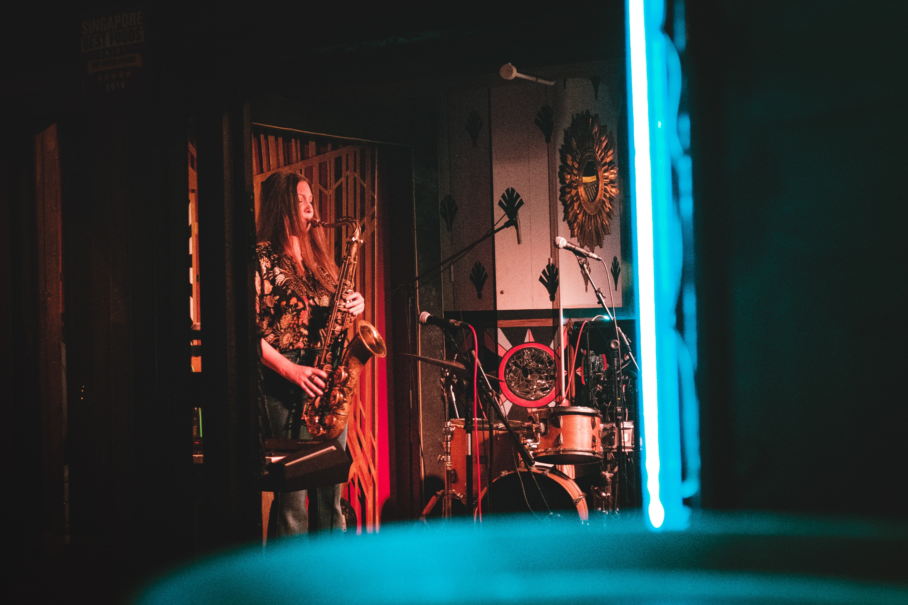

- Bathtub Gin and Co.
- Seattle Nightlife: Central Saloon
- Dimitriou's Jazz Alley
The bar is located in the former basement-level boiler room of Belltown’s Humphrey Apartments. It has an alleyway entrance and they serve a wide variety of local and international liquors. The bar has six-seat bar on its upper level. They also serve gin produced in Seattle and the Pacific Northwest.
They also have a lounge area which has comfy couches and tables for relaxation, including a library-themed area.

Central Saloon is city’s oldest bar. From history, the bar also hosted performances by legendary bands such as Nirvana and Soundgarden.
They serve a wide variety of classic pub fare, including craft burgers. You can also enjoy some yummy food like wrap sandwiches, and shareable bar appetizers. They have an extensive wine, beer, and spirits menus.

This one's for all the Jazz lovers. This jazz club has been in Seattle since more than 30 years. All tables at the club have an exceptional sight lines of the venue’s stage. They host variety of touring acts and performances by up-and-coming local musicians.
You can enjoy some Pacific Northwest cuisine while you are here. There are also vegetarian and gluten free options available.
